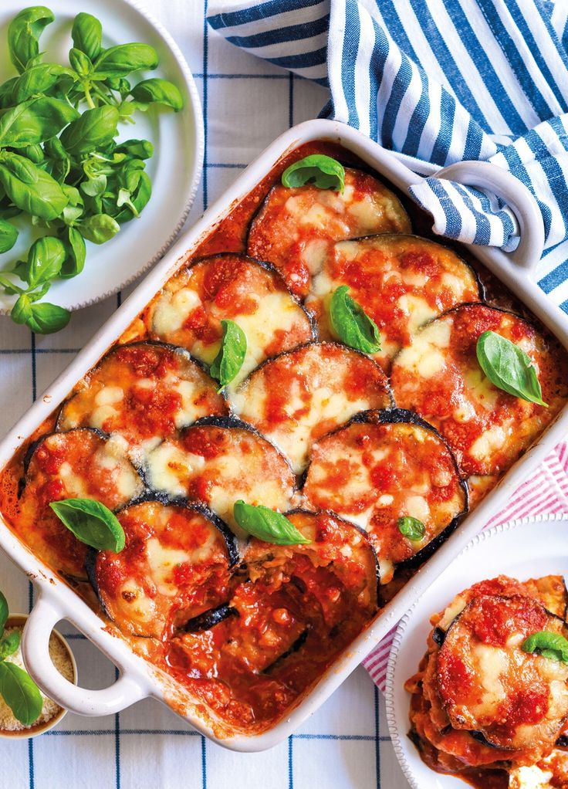

Parmigiana Recipe

Description
Parmigiana, a classic Italian dish, features slices of eggplant breaded, fried until crispy, then layered with tomato sauce and melted mozzarella cheese. Baked to golden perfection, it offers a delightful combination of textures and flavors, making it a comforting and satisfying meal for any occasion.
Ingredients
- 2 large eggplants, sliced into rounds
- 2 cups tomato sauce (homemade or store-bought)
- 1 cup grated Parmesan cheese
- 1 cup shredded mozzarella cheese
- Olive oil,for frying
- Salt
- Freshly ground black pepper
- Fresh basil leaves, torn (optional)
Steps
- Preheat your oven to 375°F (190°C).
- Place the sliced eggplant in a colander and sprinkle generously with salt. Let it sit for about 30 minutes to draw out excess moisture and bitterness. Rinse the eggplant slices under cold water and pat them dry with paper towels.
- Heat olive oil in a large skillet over medium-high heat. Working in batches, fry the eggplant slices until golden brown on both sides, about 2-3 minutes per side. Transfer the fried eggplant slices to a plate lined with paper towels to drain excess oil.
- In a baking dish, spread a thin layer of tomato sauce on the bottom. Arrange a layer of fried eggplant slices on top of the sauce. Sprinkle with a portion of Parmesan and mozzarella cheese. Repeat the layers until all the eggplant slices are used, finishing with a layer of cheese on top.
- Cover the baking dish with aluminum foil and bake in the preheated oven for 25-30 minutes, or until the cheese is melted and bubbly.
- Remove the foil and bake for an additional 10 minutes, or until the cheese is golden brown.
- Remove from the oven and let it cool slightly before serving. Garnish with torn basil leaves, if desired, and freshly ground black pepper.
- Serve hot and enjoy your delicious Parmigiana!
Feel free to adjust the recipe according to your taste preferences, adding more cheese or seasoning as desired. Buon appetito!